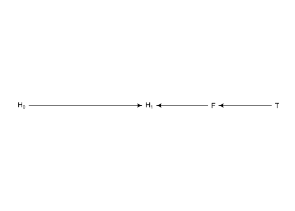
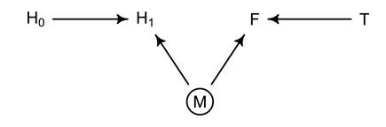

6.2 Post-treatment bias
The confound that gets created is the “post-treatment bias”, Z. Post-treatment variables arise as a consequence of treatment. This happens a lot. The bias occurs when you’re not aware of Z, and end up inferring something wrong.
![Let's imagine an experiment where there's fungal growth in a greenhouse, and you have an anti-fungal treatment, and you randomly assign plants to either the treatment or control. The initial height of the plant is H0. The anti-fungal treatment is upstream from the fungus, but doesn't influence it directly. What happens here in a regression is if you measure fungus - which is how you test for mediation - but what you're interested in is the full path from T to H1. If you condition on F, it'll look like the treatment doesn't work. If you condition on F, you block the pipe, and information doesn't flow from T to H1. In observational studies, the terror is real.](slides/L06/14.png)
Let’s imagine an experiment where there’s fungal growth in a greenhouse, and you have an anti-fungal treatment, and you randomly assign plants to either the treatment or control. The initial height of the plant is H0. The anti-fungal treatment is upstream from the fungus, but doesn’t influence it directly. What happens here in a regression is if you measure fungus - which is how you test for mediation - but what you’re interested in is the full path from T to H1. If you condition on F, it’ll look like the treatment doesn’t work. If you condition on F, you block the pipe, and information doesn’t flow from T to H1. In observational studies, the terror is real.
set.seed(71)
# number of plants
N <- 100
# simulate initial heights
h0 <- rnorm(N,10,2)
# assign treatments and simulate fungus and growth
treatment <- rep( 0:1 , each=N/2 )
fungus <- rbinom( N , size=1 , prob=0.5 - treatment*0.4 )
h1 <- h0 + rnorm(N, 5 - 3*fungus)
# compose a clean data frame
d <- data.frame( h0=h0 , h1=h1 , treatment=treatment , fungus=fungus )
precis(d)## mean sd 5.5% 94.5% histogram
## h0 9.95978 2.1011623 6.570328 13.07874 ▁▂▂▂▇▃▂▃▁▁▁▁
## h1 14.39920 2.6880870 10.618002 17.93369 ▁▁▃▇▇▇▁▁
## treatment 0.50000 0.5025189 0.000000 1.00000 ▇▁▁▁▁▁▁▁▁▇
## fungus 0.23000 0.4229526 0.000000 1.00000 ▇▁▁▁▁▁▁▁▁▂6.2.1. A prior is born
We should allow \(p\) to be less than 1, in case the experiment goes horribly wrong and we kill all the plants. We also have to ensure that \(p > 0\), because it is a proportion.
\[ h_{1,i}\sim Normal(\mu_i, \sigma) \\ \mu_i = h_{0,i} \times p \]
sim_p <- rlnorm( 1e4 , 0 , 0.25 )
precis( data.frame(sim_p) )## mean sd 5.5% 94.5% histogram
## sim_p 1.03699 0.2629894 0.670683 1.496397 ▁▁▃▇▇▃▁▁▁▁▁▁So this prior expects anything from 40% shrinkage up to 50% growth.
m6.6 <- quap(
alist(
h1 ~ dnorm( mu , sigma ),
mu <- h0*p,
p ~ dlnorm( 0 , 0.25 ),
sigma ~ dexp( 1 )
), data=d )
precis(m6.6)## mean sd 5.5% 94.5%
## p 1.426626 0.01760992 1.398482 1.454770
## sigma 1.793286 0.12517262 1.593236 1.993336m6.7 <- quap(
alist(
h1 ~ dnorm( mu , sigma ),
mu <- h0 * p,
p <- a + bt*treatment + bf*fungus,
a ~ dlnorm( 0 , 0.2 ) ,
bt ~ dnorm( 0 , 0.5 ),
bf ~ dnorm( 0 , 0.5 ),
sigma ~ dexp( 1 )
), data=d )
precis(m6.7)## mean sd 5.5% 94.5%
## a 1.481391468 0.02451069 1.44221865 1.52056429
## bt 0.002412222 0.02986965 -0.04532525 0.05014969
## bf -0.266718915 0.03654772 -0.32512923 -0.20830860
## sigma 1.408797442 0.09862070 1.25118251 1.566412376.2.2. Blocked by consequence
So when we control for fungus, the model is implicitly answering the question: Once we already know whether or not a plant developed fungus, does soil treatment matter? The answer is “no,” because soil treatment has its effects on growth through reducing fungus.
To measure treatment properly, we should omit the post-treatment variable fungus.
m6.8 <- quap(
alist(
h1 ~ dnorm( mu , sigma ),
mu <- h0 * p,
p <- a + bt*treatment,
a ~ dlnorm( 0 , 0.2 ),
bt ~ dnorm( 0 , 0.5 ),
sigma ~ dexp( 1 )
), data=d )
precis(m6.8)## mean sd 5.5% 94.5%
## a 1.38035767 0.02517554 1.34012229 1.4205931
## bt 0.08499924 0.03429718 0.03018573 0.1398128
## sigma 1.74631655 0.12191552 1.55147200 1.9411611Now the impact of treatment is clearly positive, as it should be.
6.2.3. Fungus and d-separation
library(dagitty)
plant_dag <- dagitty( "dag {
H_0 -> H_1
F -> H_1
T -> F
}")
coordinates( plant_dag ) <- list( x=c(H_0=0,T=2,F=1.5,H_1=1) ,
y=c(H_0=0,T=0,F=0,H_1=0) )
drawdag( plant_dag )
dagitty::impliedConditionalIndependencies(plant_dag)## F _||_ H_0
## H_0 _||_ T
## H_1 _||_ T | FThe first two say that original plant height should not be associated with the treatment of fungus, provided we do not condition on anything.
But consider this DAG:
knitr::include_graphics(here::here("docs/misc_figs/06/fungus_dag.png"))
A regression of \(H_1\) on \(T\) will show no association between the treatment and plant growth. But if we include \(F\) in the model, suddenly there will be an association. Let’s try it.
set.seed(71)
N <- 1000
h0 <- rnorm(N,10,2)
treatment <- rep( 0:1 , each=N/2 )
M <- rbern(N)
fungus <- rbinom( N , size=1 , prob=0.5 - treatment*0.4 + 0.4*M )
h1 <- h0 + rnorm( N , 5 + 3*M )
d2 <- data.frame( h0=h0 , h1=h1 , treatment=treatment , fungus=fungus )
# Rerun models with d2
m6.7 <- quap(
alist(
h1 ~ dnorm( mu , sigma ),
mu <- h0 * p,
p <- a + bt*treatment + bf*fungus,
a ~ dlnorm( 0 , 0.2 ) ,
bt ~ dnorm( 0 , 0.5 ),
bf ~ dnorm( 0 , 0.5 ),
sigma ~ dexp( 1 )
), data=d2 )
precis(m6.7)## mean sd 5.5% 94.5%
## a 1.52211420 0.01360385 1.50037263 1.54385578
## bt 0.04859313 0.01415624 0.02596872 0.07121754
## bf 0.14276270 0.01415774 0.12013590 0.16538949
## sigma 2.10262855 0.04694249 2.02760537 2.17765172m6.8 <- quap(
alist(
h1 ~ dnorm( mu , sigma ),
mu <- h0 * p,
p <- a + bt*treatment,
a ~ dlnorm( 0 , 0.2 ),
bt ~ dnorm( 0 , 0.5 ),
sigma ~ dexp( 1 )
), data=d2 )
precis(m6.8)## mean sd 5.5% 94.5%
## a 1.62401319 0.009546625 1.60875584 1.63927054
## bt -0.01051596 0.013511945 -0.03211066 0.01107874
## sigma 2.20520300 0.049231869 2.12652096 2.28388504Now fungus seems like it helped the plants, even though it had no effect.
Frustrating thing for statisticians is that if you condition on career choice, there’s basically no wage gap. But that doesn’t mean gender and race isn’t causal, because there are streams where something downstream knocks it out. If you look at funding rates for the sciences, women get way less grant money. But not if you condition on field.